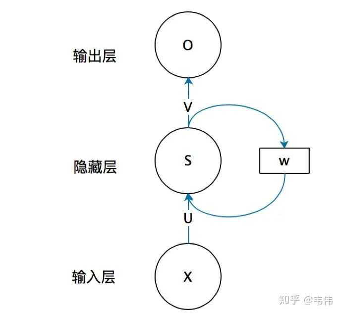
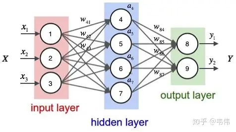
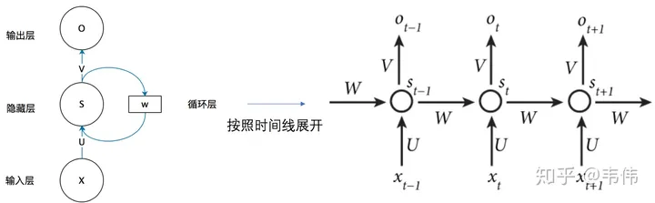
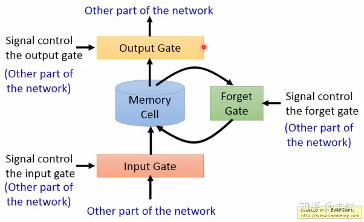
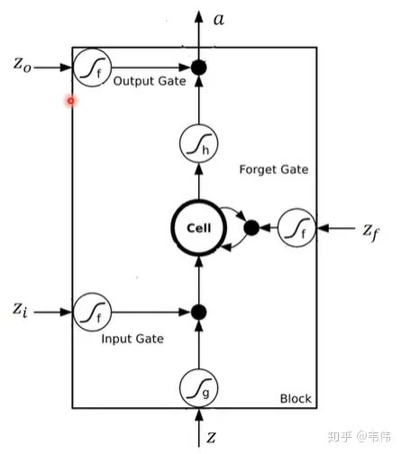
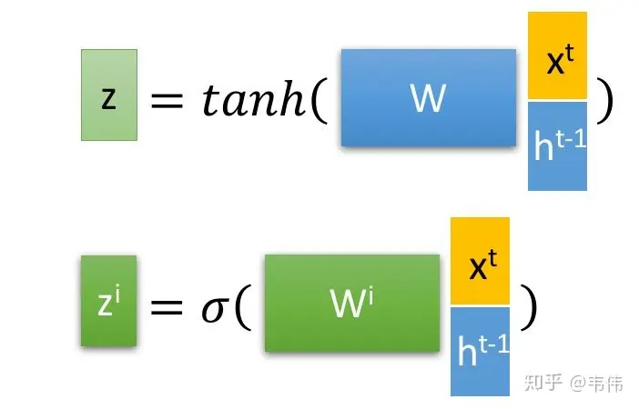
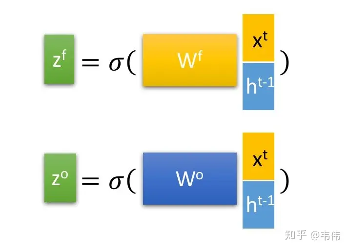

【学习笔记】史上最详细循环神经网络讲解（RNN/LSTM/GRU）
循环神经网络（RNN）
什么是循环神经网络
循环神经网络（Rerrent Neural Network, RNN）对具有序列特性的数据非常有效，它能挖掘数据中的时序信息以及语义信息，利用了RNN的这种能力，使深度学习模型在解决语音识别、语言模型、机器翻译以及时序分析等NLP领域的问题时有所突破。
为什么要发展循环神经网络
我们先来看一个NLP很常见的问题，命名实体识别，举个例子，现在有两句话：
第一句话：I like eating apple！（我喜欢吃苹果！）
第二句话：The Apple is a great company！（苹果真是一家很棒的公司！）
现在的任务是要给apple打Label，我们都知道第一个apple是一种水果，第二个apple是苹果公司，假设我们现在有大量的已经标记好的数据以供训练模型，当我们使用全连接的神经网络时，我们做法是把apple这个单词的特征向量输入到我们的模型中，在输出结果时，让我们的label里，正确的label概率最大，来训练模型，但我们的语料库中，有的apple的label是水果，有的label是公司，这将导致，模型在训练的过程中，预测的准确程度，取决于训练集中哪个label多一些，这样的模型对于我们来说完全没有作用。问题就出在了我们没有结合上下文去训练模型，而是单独的在训练apple这个单词的label，这也是全连接神经网络模型所不能做到的，于是就有了我们的循环神经网络。
循环神经网络的结构及原理

先不管右边的W，只看X,U,S,V,O，这幅图就变成了，如下：

这就是我们的全连接神经网络结构。
把这幅图打开，就是RNN可以解决序列问题的原因：可以记住每一时刻的信息，每一时刻的隐藏层不仅由该时刻的输入层决定，还由上一时刻的隐藏层决定

公式如下，$O_t代表t时刻的输出，S_t代表t时刻隐藏层的值$：
值得注意的一点是，在整个训练过程中，每一时刻所用的都是同样的W。
LSTM（Long short-term memory）
基础版本RNN的问题
每一时刻的隐藏状态都不仅由该时刻的输入决定，还取决于上一时刻的隐藏层的值，如果一个句子很长，到句子末尾时，它将记不住这个句子的开头的内容详细内容。（梯度消失或爆炸）
LSTM
打个比喻吧，普通RNN就像一个乞丐，路边捡的，别人丢的，什么东西他都想要，什么东西他都不嫌弃，LSTM就像一个贵族，没有身份的东西他不要，他会精心挑选符合自己身份的物品。

普通RNN只有中间的Memory Cell用来存所有的信息
依次来解释一下这三个门：
- Input Gate：中文是输入门，在每一时刻从输入层输入的信息会首先经过输入门，输入门的开关会决定这一时刻是否会有信息输入到Memory Cell。
- Output Gate：中文是输出门，每一时刻是否有信息从Memory Cell输出取决于这一道门。
- Forget Gate：中文是遗忘门，每一时刻Memory Cell里的值都会经历一个是否被遗忘的过程，就是由该门控制的，如果打卡，那么将会把Memory Cell里的值清除，也就是遗忘掉。
LSTM内部结构：

图中最中间的地方，Cell，我们上面也讲到了memory cell，也就是一个记忆存储的地方，这里就类似于普通RNN的 $S_t$ ，都是用来存储信息的，这里面的信息都会保存到下一时刻，其实标准的叫法应该是$h_t$，因为这里对应神经网络里的隐藏层，所以是hidden的缩写，无论普通RNN还是LSTM其实t时刻的记忆细胞里存的信息，都应该被称为 $h_t$ 。再看最上面的 $a$ ，是这一时刻的输出，也就是类似于普通RNN里的$O_t$ 。普通RNN里有个 $X_t$作为输入，那LSTM的输入在哪？$Z$,$Z_i$,$Z_f$,$Z_o$都有输入向量$X_t$的参与。
现在再解释图中的符号
表示一个激活符号，LSTM里常用的激活函数有两个，一个是tanh，一个是sigmoid


其中$Z$是最为普通的输入，可以从上图中看到，$Z$是通过该时刻的输入$Xt$和上一时刻存在memory cell里的隐藏层信息$h{t-1}$向量拼接，再与权重参数向量$W$点积，得到的值经过激活函数tanh最终会得到一个数值，也就是$Z$，注意只有$Z$的激活函数是tanh，因为$Z$是真正作为输入的，其他三个都是门控装置。
$Zi$ ，input gate的缩写i，所以也就是输入门的门控装置， $Z_i$同样也是通过该时刻的输入 $X_t$和上一时刻隐藏状态，也就是上一时刻存下来的信息$h{t-1}$ 向量拼接，在与权重参数向量$W_i$点积（注意每个门的权重向量都不一样，这里的下标i代表input的意思，也就是输入门）。得到的值经过激活函数sigmoid的最终会得到一个0-1之间的一个数值，用来作为输入门的控制信号。
$Z_f$和$Z_o$同理，分别代表forget和output的门控装置。
经过这个sigmod激活函数后，得到的$Z_i$,$Z_f$,$Z_o$都是在0到1之间的数值，1表示该门完全打开，0表示该门完全关闭。